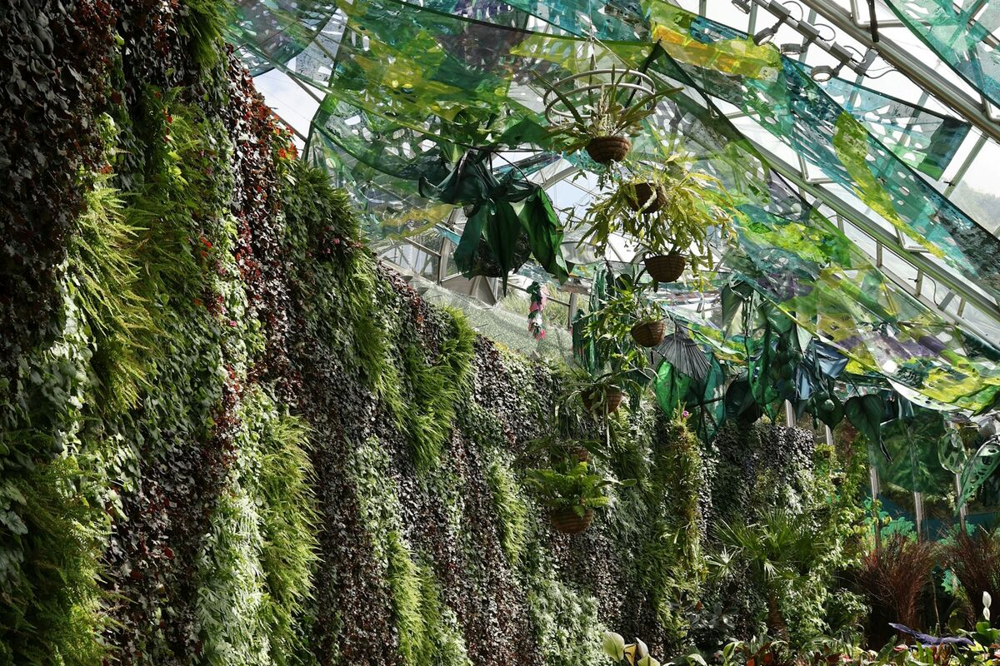

Restaurant au bord du lac, lobby d'hôtel en station ou bureaux à Savoie Technolac : Verdalys précise votre projet de mur végétal et le transmet à un installateur partenaire couvrant les deux Savoie. Rappel sous 24 h ouvrées.
Par Sébastien Monnier, fondateur de Verdalys · Mis à jour le

Tourisme de lac et de montagne, hôtellerie de station, tissu industriel et tertiaire dynamique autour d'Annecy et de Chambéry : la demande est forte, avec une particularité — des hivers longs où le végétal se vit surtout à l'intérieur.
Hôtels de station, résidences de tourisme et établissements du bord du lac soignent lobbies, couloirs et restaurants. Le stabilisé y apporte un décor durable, sans eau ni lumière. Voir notre page hôtels & restaurants.
Restaurants de la vieille ville, boutiques du centre, zones d'activités de Seynod et d'Épagny Metz-Tessy : un mur végétal derrière un comptoir ou dans un showroom crée une identité immédiate. Voir notre page commerces & showrooms.
Bureaux du centre de Chambéry, entreprises de la technopole Savoie Technolac au Bourget-du-Lac, hôtels et établissements thermaux d'Aix-les-Bains : halls, salles de réunion et espaces d'accueil s'équipent d'un mur végétal en bureaux.
Le climat de montagne change la donne : gel et neige à l'extérieur, air chauffé et sec à l'intérieur l'hiver, zones très humides dans les spas. Le choix du système et des végétaux en découle.
Lobby, réception, salle de restaurant, boutique : le stabilisé ne demande ni arrosage ni lumière. Sa palette repose sur la mousse boule, le lichen scandinave et des feuillages stabilisés. On l'écarte simplement des spas et piscines, au-delà d'environ 70 % d'hygrométrie.
Un mur naturel vivant réunit pothos, philodendrons, fougères et spathiphyllums. Il demande de la lumière, une irrigation automatique et doit rester à l'écart des radiateurs et soufflages d'air chaud, qui dessèchent le feuillage en quelques semaines.
Les plantes rustiques — heuchères, fougères, sedums — passent l'hiver ; le réseau d'irrigation, non. Une installation extérieure prévoit une vidange avant les gelées et un local technique hors gel. Voir notre page mur végétal extérieur.
Spa, piscine intérieure, hammam : l'humidité permanente exclut le stabilisé. On s'oriente vers un feuillage artificiel adapté ou un système vivant conçu pour ces ambiances. Le détail des espèces figure dans notre guide quelles plantes pour un mur végétal.
Les devis savoyards reprennent les repères nationaux ; en station, l'accès au chantier et la saison peuvent s'y ajouter.
| Type de mur végétal | Usage typique en Savoie | Prix indicatif HT posé |
|---|---|---|
| Stabilisé classique | Salle de restaurant, boutique | 400 – 650 €/m² |
| Stabilisé en relief | Lobby d'hôtel de station | 650 – 900 €/m² |
| Vivant, irrigation non incluse | Hall lumineux, verrière | 600 – 1 200 €/m² |
| Synthétique | Spa, piscine, terrasse | 150 – 400 €/m² |
Un installateur unique, aucun coût pour vous, aucune obligation de signer.
Commune ou station, type d'établissement, surface, intérieur ou extérieur, humidité et délai.
Sous un jour ouvré, l'installateur vous rappelle pour préciser système et palette végétale, selon la saison et l'accès.
Fourniture et pose, irrigation et entretien pour un mur vivant ; en station, pose possible hors saison.
Haute-Savoie (74) et Savoie (73), vallées et stations selon l'accès.
Annecy, Seynod, Cran-Gevrier, Épagny Metz-Tessy, Annemasse, Thonon-les-Bains et les rives du lac.
Chambéry, Aix-les-Bains, Le Bourget-du-Lac et Savoie Technolac, La Motte-Servolex et Albertville.
Aravis, massif du Mont-Blanc, Tarentaise et Maurienne : précisez la station et l'accès au chantier lors de la demande.
Verdalys n'a ni agence ni équipe en Savoie : nous orientons les demandes. Un installateur partenaire indépendant couvrant les deux Savoie conçoit, chiffre et pose ; personne d'autre ne reçoit vos coordonnées. Les projets lyonnais ont leur propre page : mur végétal à Lyon.
Décrivez le lieu et la saison souhaitée : un installateur partenaire vous rappelle sous 24 h ouvrées.
Demander mon devis gratuitLes deux Savoie ne sont pas les seules régions couvertes : chaque grande ville a sa page dédiée.